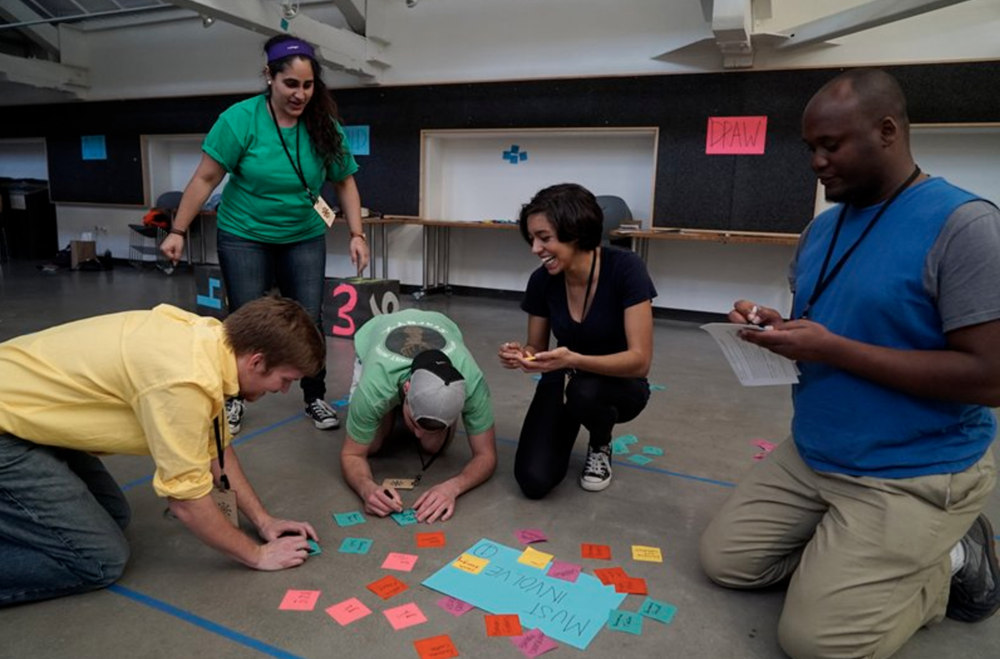
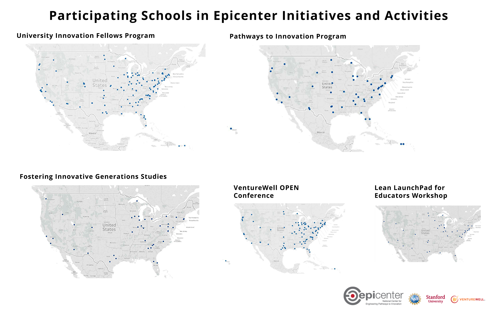
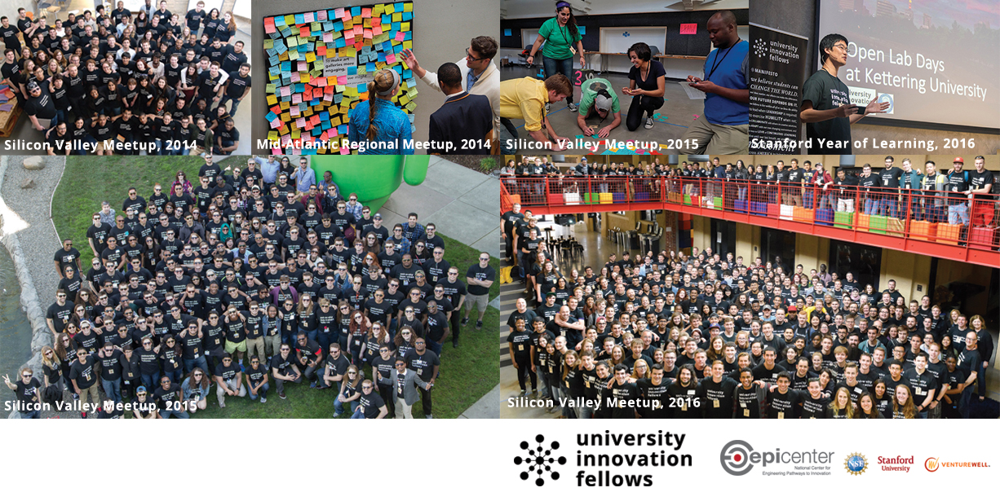
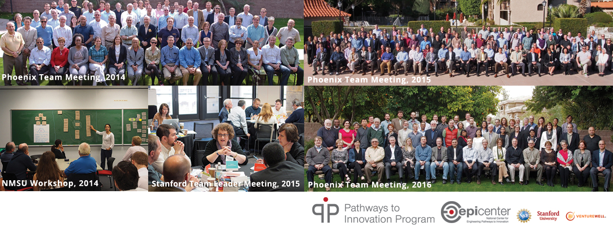
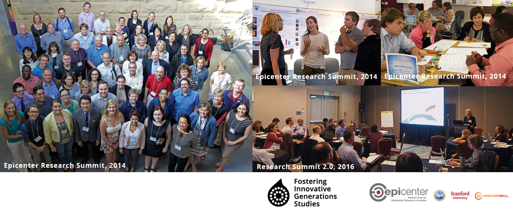
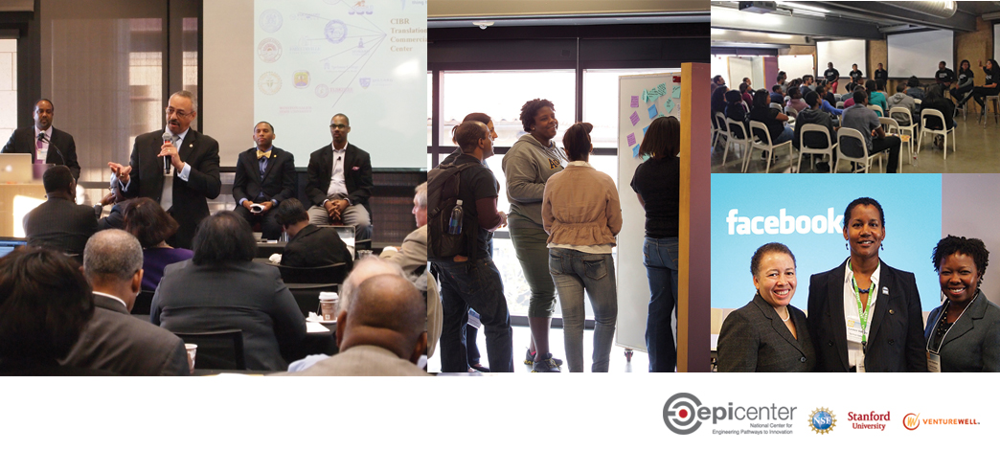

At the end of Epicenter's National Science Foundation grant, the team created a project outcomes report to share the impact of the center. This report is public and housed on nsf.gov.

The National Center for Engineering Pathways to Innovation (Epicenter) was a five-year, $10 million National Science Foundation (NSF) center grant. Epicenter’s goal was to catalyze change in undergraduate engineering education through initiatives that inspire students to envision possibilities and create innovative products, services, and processes for lasting economic and societal impact. The NSF and the Epicenter team believed that it was no longer enough for engineering students to graduate with a purely technical education; they needed to be creative, flexible, and empathetic team members and leaders equipped with the ability to recognize and realize opportunities.
The NSF grant (1125457) was awarded in 2011 to a team from Stanford University’s Stanford Technology Ventures Program, with nonprofit VentureWell (formerly NCIIA) as a key partner and SageFox Consulting Group as the external evaluator. Epicenter’s initial work focused on needfinding and community growth, including the development of an online resource-sharing platform. Activities included the Epicenter Retreat in September 2012 for innovation and entrepreneurship (I&E) educators to collaborate on projects of shared interest, a survey administered to members of the American Society for Engineering Education (ASEE) to understand the needs of engineering faculty and administrators, and an article by Epicenter leaders in the National Academy of Engineering (NAE) journal, The Bridge.
As a result of this exploration, the Epicenter team pivoted from platform development to individual and community engagement, and created three initiatives focused on students, faculty and research:
The University Innovation Fellows program trains students to analyze their campus I&E ecosystems and create educational opportunities for their peers. During the Epicenter grant, the program trained 607 students at 143 institutions, including STEM and non-STEM students. Fellows created hundreds of activities at their schools related to innovation, entrepreneurship, design thinking and creativity. In 2015-16, these activities included more than 269 extracurricular events, 239 extracurricular programs, 169 academic offerings and 137 spaces, with more reported in progress at the end of the grant. Fellows also collaborate with academic leaders to create lasting institutional change and represent their schools at conferences alongside program team members. They take part in national initiatives such as #uifresh, during which 30 Fellows’ schools exposed first-year students to I&E during orientation. This initiative was announced during the 2015 White House Science Fair and was supported by presidents of each school.
The Pathways to Innovation Program is a faculty development and institutional change initiative. During the Epicenter grant, Pathways worked with teams from 50 schools to analyze their campus assets and utilize a strategic planning process to integrate I&E into their ecosystems. The Pathways teams worked on more than 400 projects designed to implement sustained changes to the undergraduate experience. These included extracurricular programming; courses and programs; campus policy changes such as intellectual property; tenure and promotion; new positions; makerspaces; entrepreneurship centers; funding through industry partnership and grants; and dissemination of best practices through conferences and journals. The teams engaged 30,000 undergraduate engineering students at their schools as well as undergraduate and graduate students from other disciplines. In addition, nine Pathways schools became I-Corps sites. The program created a community of practice of more than 400 faculty from STEM, business and non-STEM faculty.
The Fostering Innovative Generations Studies (FIGS) research initiative conducted a set of national studies of I&E in engineering focused on three questions, from which have come numerous publications and conference presentations. The FIGS team also convened members of the research community around this topic, most notably in two summits in 2014 and 2016. In Spring 2015, the team launched the Engineering Majors Survey (EMS), a longitudinal study administered to more than 30,000 engineering students from 27 universities, making it one of the largest longitudinal studies of engineers and I&E to date. The results, shared with the individual survey campuses, generated knowledge about factors associated with students’ career decisions, I&E experiences and I&E self efficacy. A follow-up to the EMS was launched in Spring 2016. The third wave of the EMS is scheduled for Summer 2017, and the instrument has been adapted by researchers in the U.S. and Europe who are studying I&E pathways.
During the NSF grant, Epicenter engaged 174 institutions in one or more initiatives. In addition to the impacts above, the team published 25 papers; gave more than 50 presentations and workshops at conferences focused on I&E; administered two ASEE community surveys; supported 12 Lean LaunchPad Educators workshops with 829 participants; supported four VentureWell OPEN conferences; and co-hosted two innovation summits in Silicon Valley that brought together leaders from historically black colleges and universities (HBCUs). Epicenter also partnered with organizations including the Association of Public and Land-grant Universities, White House Office of Science and Technology Policy, American Society for Engineering Education, Engineering Deans Institute, and National Academy of Engineering.
The three Epicenter initiatives have continued after the end of the grant. For more information, visit epicenter.stanford.edu.
Graphics submitted with the report:




